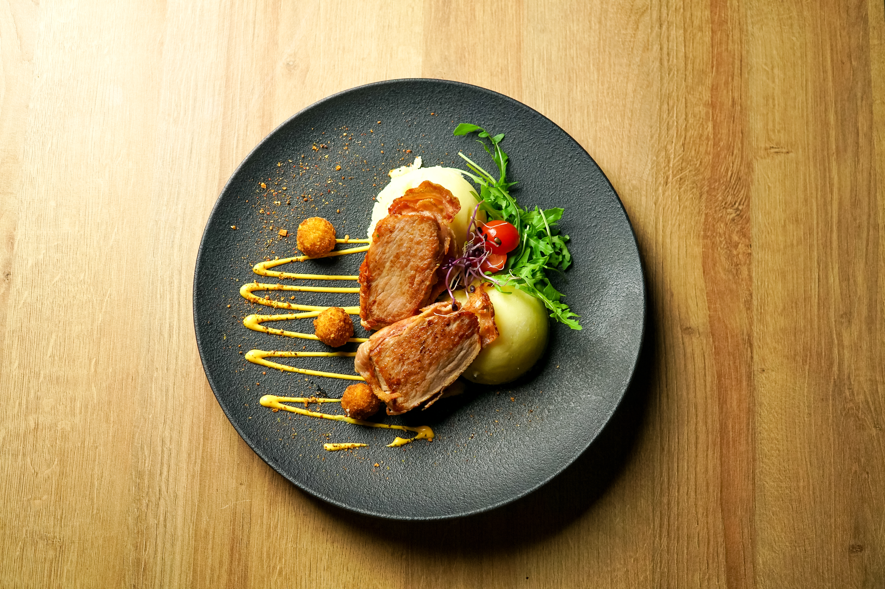
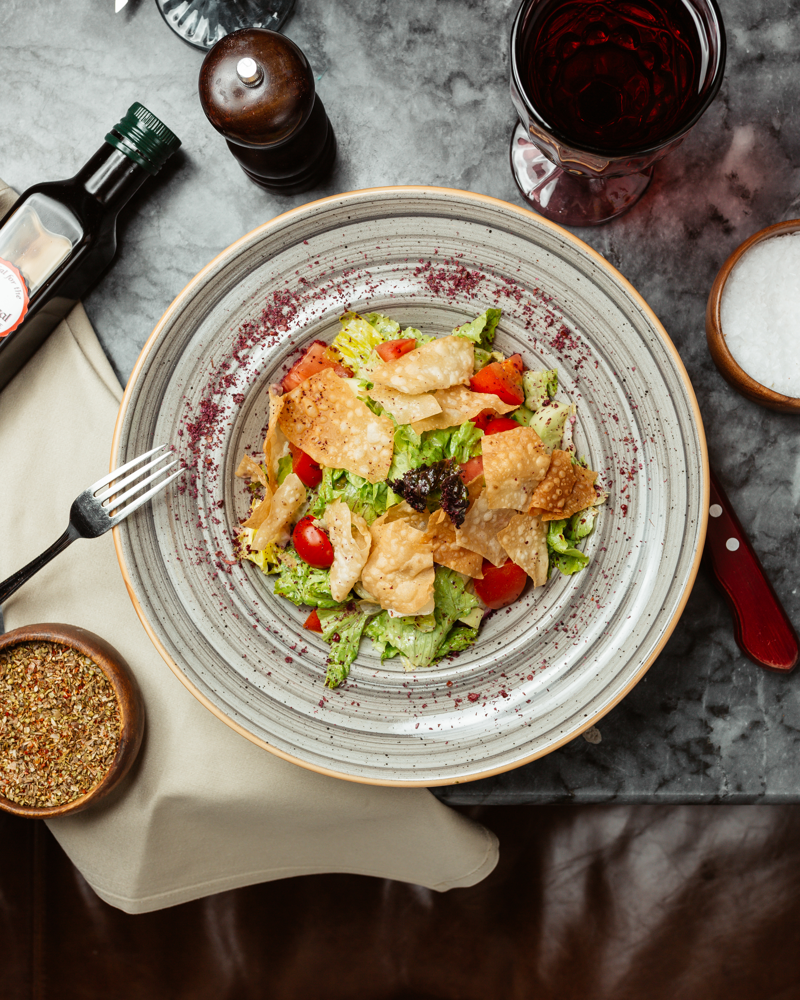
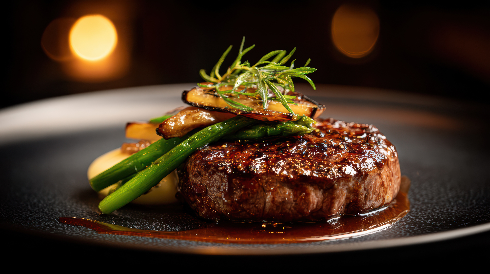
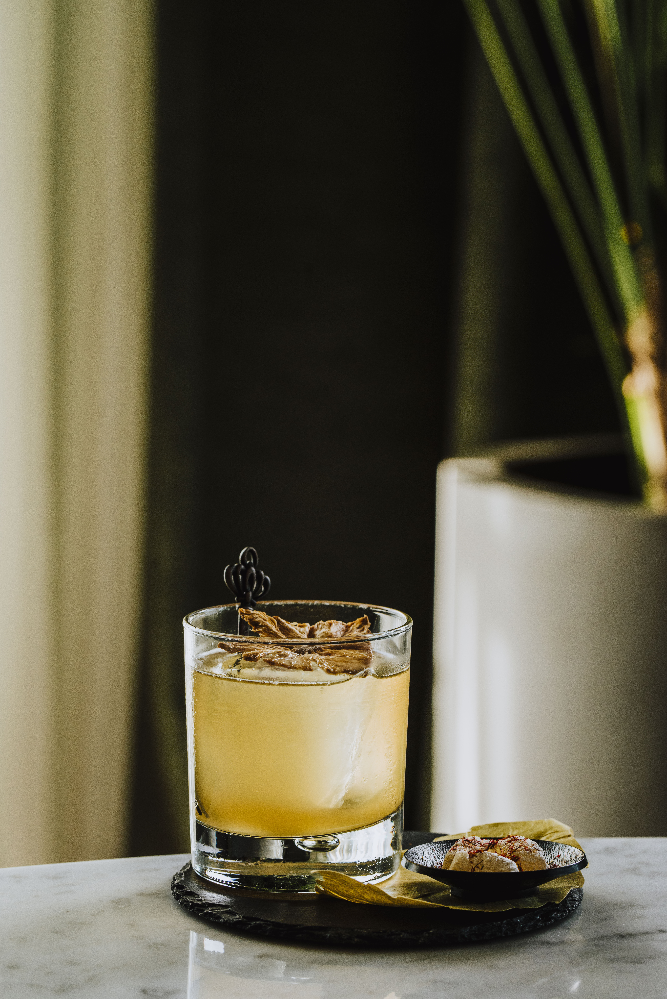

Spaghetti com Frutos do Mar ao Pesto Vellor
Delicado espaguete artesanal salteado com camarões frescos, leve toque de pimenta dedo-de-moça, manjericão verde e generosas lascas de parmesão maturado.
R$ 102,00

Suaves medalhões de filé suíno envoltos em bacon defumado, servidos sobre purê trufado e finalizados com emulsão artesanal de mostarda ancienne.
R$ 98,00
Delicado espaguete artesanal salteado com camarões frescos, leve toque de pimenta dedo-de-moça, manjericão verde e generosas lascas de parmesão maturado.
R$ 102,00

Crocantes folhas de alface fresca combinadas com tomates cereja suculentos, envoltas no clássico molho Caesar da casa e finalizadas com lascas de pão tostado crocante.
R$ 65,00

Delicado espaguete artesanal salteado com camarões frescos, leve toque de pimenta dedo-de-moça, manjericão verde e generosas lascas de parmesão maturado.
R$ 110,00

Sofisticada releitura do clássico francês, apresentando lâminas empilhadas de berinjelas e pimentões coloridos grelhados, intercaladas com queijo de cabra artesanal, finalizada com redução balsâmica e ervas frescas.
R$ 102,00

Refinado coquetel artesanal à base de destilado premium, harmonizado com notas cítricas encorpadas e toque sutil de especiarias, servido sobre gelo cristalino e finalizado com rodela desidratada.
R$ 40,00